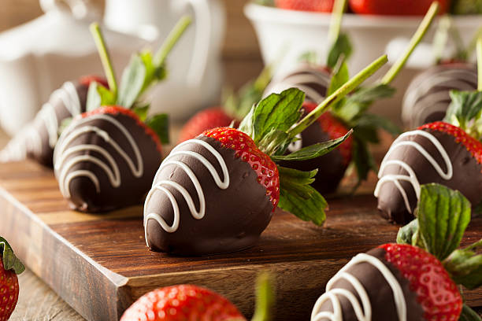

Goan fish curry
This is typical traditional Goan fish curry preparation. You can make this with any fleshy fish that will not disintegrate into the curry. Serve curry hot over rice.
Ingredients
- 1/2 cup grated coconut
- salt and taste
- 5 red kashmiri chiles
- 4 cloves garlic, peeled
- 1/2 pound white fish, cut into thin slices
- tablespoon coriader seeds
- 4 whole peppercorns
- 1/2 teaspoon ground turmerid
- 2 pieces kokum
steps
- Season fish pieces with salt.
- Grind coconut, red chiles, garlic, coriander, and peppercorns together with a morter and pestle until a fine paste forms.
- Combine paste and turmeric powder in a pot and bring to a boil; add fish. Lower temperature to medium and cook until fish flakes easily with a fork, about 15 minutes. Add kokum and mix well.

Chocolate-Covered Strawberries
This is the simplest version of chocolate covered strawberries I know. Paraffin was originally used instead of shortening. Turn the strawberries upside down and insert by the toothpicks into a piece of styrofoam for easy cooling, or simply place them on a sheet of wax paper. White chocolate may be drizzled over the milk chocolate for a fancier look. They are perfect for weddings when decorated with frosting bow ties, bells, butterflies, roses, etc.
Ingredients
- 16 ounces milk chocolate chips
- 2 tablespoons shortening
- 1 pound fresh strawberries with leaves
steps
- In a double boiler, melt the chocolate and shortening, stirring occasionally until smooth. Holding them by the toothpicks, dip the strawberries into the chocolate mixture.
- Insert toothpicks into the tops of the strawberries.
- Turn the strawberries upside down and insert the toothpick into styrofoam for the chocolate to cool.

Lobster Mac and Cheese
High class meets down home. This dish is just my style. The amazing combination of flavors make this one of my favorites.
Ingredients
- 1 (16 ounce) package elbow macaroni
- 1 (2 pound) lobster, split
- 2 tablespoons butter
- 1 small onion, diced
- 1 clove garlic, minced
- 1 shallot, chopped
- 1 shallot, chopped
- 2 cups milk
- 5 tablespoons butter
- 5 tablespoons all-purpose flour
- 1 pound shredded Gruyere cheese
- 3 cups shredded Cheddar cheese
- 1 cup grated Romano cheese
- kosher salt and pepper to taste
- 3 tablespoons panko bread crumbs
steps
- Fill a large pot with lightly salted water and bring to a rolling boil over high heat. Once the water is boiling, stir in the macaroni, and return to a boil. Cook the pasta uncovered, stirring occasionally, until the pasta has cooked through, but is still firm to the bite, about 8 minutes. Reserve about 2 cups of the hot pasta water, then drain the pasta in a colander set in the sink, and rinse with cold water to cool. Set aside.
- Return the pasta water to the large pot, and place the lobster halves in the pot, cut-side up. Return the water to a boil, then reduce heat to medium-low, cover, and steam the lobster just until the meat firms and turns opaque, about 3 minutes. Remove the lobster and allow to cool for a few minutes, then remove the meat and cut into bite sized pieces. Reserve the shells.
- Melt 2 tablespoons of butter in a saucepan over medium heat. Stir in the onion and cook until the onion has softened and turned translucent, about 5 minutes; scrape the onions into a small bowl and set aside. Place the reserved lobster shells, garlic, shallots, peppercorns, and milk into the saucepan. Bring to a gentle simmer over medium heat, and cook for 20 minutes.
- Preheat oven to 350 degrees F (175 degrees C).
- Melt 5 tablespoons of butter in a saucepan over medium-low heat. Whisk in the flour, and stir until the mixture becomes paste-like and light golden brown, about 10 minutes. Strain the milk through a mesh sieve. Gradually whisk the milk into the flour mixture, and bring to a simmer over medium heat. Cook and stir until the mixture is thick and smooth, 10 to 15 minutes.
- Stir the Gruyere, Cheddar, and Romano cheeses into the thickened milk mixture until melted and smooth. Season to taste with salt and pepper, then stir in the reserved lobster, onions, and macaroni. Pour the macaroni into a 4 quart casserole and smooth the top. Sprinkle evenly with the panko crumbs.
- Bake in the preheated oven until the sauce is bubbly, and the top is golden brown, 8 to 12 minutes.